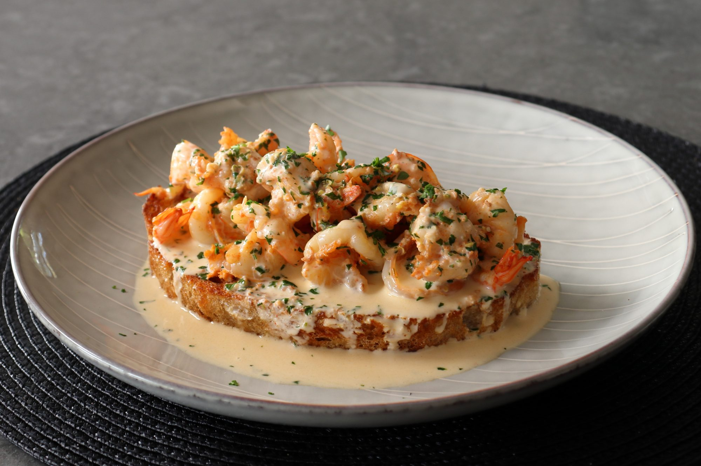

Creamy Garlic Shrimp Toast

Description
Sweet, butterflied shrimp in a garlicky cream sauce with a smoky paprika flavor are served over thick slices of buttery, pan-toasted French bread in this simple recipe for two! This sauce would be good over pasta, rice, or potatoes, but I think enjoying it like this is the best way to go.
Recipe, image and description taken from All Recipes Shrimp Garlic Toast
Ingredients
- 12 ounces large shrimp, peeled and deveined
- 1 pinch cayenne pepper
- ¼ teaspoon smoked paprika
- 3 cloves garlic, crushed, or more to taste
- 2 thick slices French bread
- 6 tablespoons clarified butter, melted, divided
- 2 teaspoons fresh lemon zest
- 2 tablespoons fresh lemon juice
- ½ cup heavy cream
- 2 tablespoons minced fresh Italian parsley
- 1 pinch salt, or to taste
Steps
- Butterfly shrimp and place in a mixing bowl. Add cayenne, paprika, and garlic and stir until shrimp are evenly coated. Refrigerate until needed.
- Trim most of the crusts off of the bread.
- Add 4 tablespoons melted butter to a skillet over medium heat. Add both slices of bread and toast until golden brown, 3 to 4 minutes per side. Remove bread to a plate and wipe out any crumbs.
- Add remaining melted butter to the skillet and increase heat to high. When the pan is very hot and you see the first wisp of smoke, add shrimp and use tongs to spread into an even layer. Sear, without stirring or tossing, for 1 minute.
- Sprinkle with lemon zest and add lemon juice and cream. Stir with a spoon to scrape any browned bits off the bottom. Let cream boil and reduce for 1 ½ to 2 minutes as the shrimp finishes cooking and the sauce thickens up.
- Turn off the heat and stir in parsley. Taste and add salt if needed.
- Divide shrimp and sauce evenly over each piece of toasted bread.